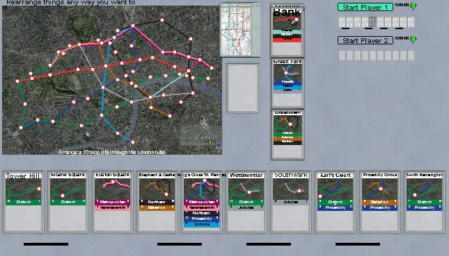
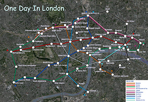
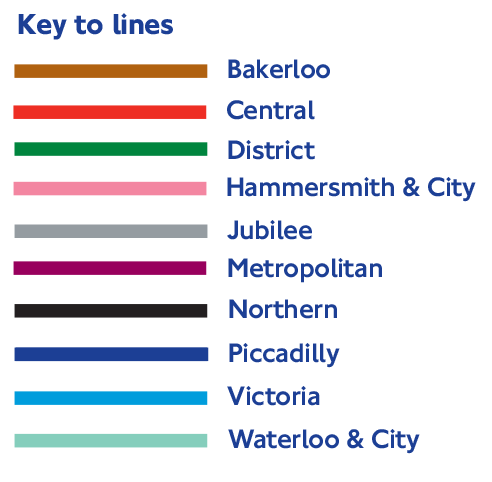
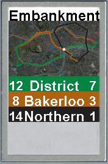

|
|
|
| The game is for 2-4
players. The Goal:: the goal of the game is to construct a 10 stop trip you could make in the London underground. (example). Equipment:: A pack of cards representing the stations in the underground system. A reference map of the London underground rail system. Racks to hold 10 cards for each player. Setup:: Each player draws 10 cards, one at a time, and places each card in one of the 10 spaces in his rack. Once placed, the card cannot be moved or rearranged during the setup. Try to place the cards so the fewest changes are likely to be needed to be needed to change them to a complete itinerary. (example) After all players have placed their cards, 3 discard piles are dealt one card each, face up. The remainder of the cards are placed face down as a draw pile. The Play: Each turn:
|
 |
Continuous
Journey:
|
 Click for a giant size map
|
 |
|
| Features of the
Cards: There is one card per intersection for
stations which are on multiple lines. Overall there are 72
cards for 62 stations. The colors associated with the lines are the customary colors from the London system. The numbers before and after the line names are the number of stations before and after the current station on the line. |
 |
 |

Embankment station is on 3 lines. There are 2copies of this
card. |
FAQ and Reality CheckThe stations and lines accurately represent zone 1 of the London underground, with one major and one minor exception. The major exception is that there is no Circle line in the game. All the stations on the circle line except one are also on at least one other line, so the connectivity of the system is unchanged, except for the minor exception that stations Aldgate and Aldgate East have been combined. In reality they are a short distance apart.More generally, the absence of the rest of the system "everything except zone 1" means you can't use this game to plan actual trips, or expect what's permitted in the game to match what you would do in reality. The reality is, if you're standing on the platform and a train arrives traveling in your intended direction, you usually just get on it. You can always get off at the next stop and be closer to your destination. A "better" train that might be following can always be taken from your new position, if it arrives. Also note that the lines don't actually end at the points they end in the game - they continue on into zone 2. The stops and stations in the game reflect what you would have to do to remain in zone 1 (and avoid paying an additional fare).
|
Credits
|
| E-Mail: | Go to BoardSpace.net home page |


{kind=link}